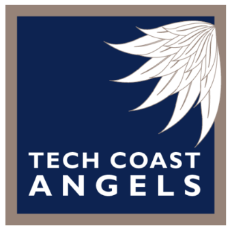
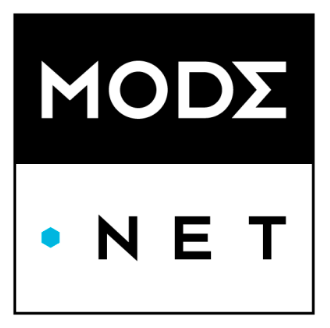
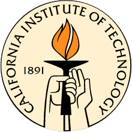
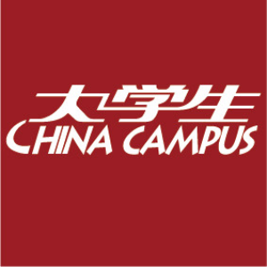
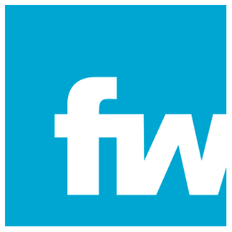
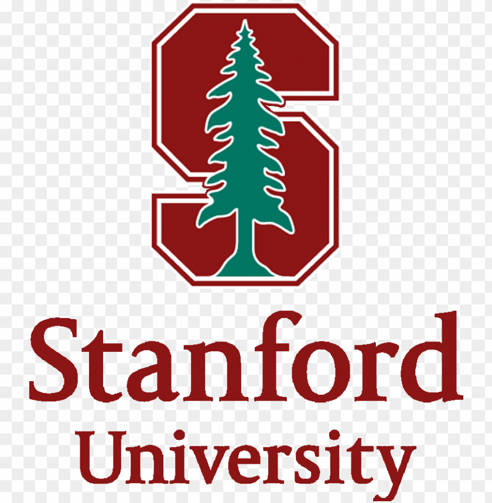

I graduated from Caltech. I'm an engineer and entrepreneur learner launching meaningful products by leveraging technical breakthroughs.

- Being invited by executive committee member to attend private investor meetings and dinners involving only TCA investors and selected founders.
- Observed the pitching and screening processes of founders from various technical industries.
- Learn feedback given by investors and board members of various public, private and non-profit companies.
Stealth Mode Startup
A machine learning startup earning over $4M cash revenue within its first 2 years without outside financing.
Entrepreneur, Software Engineer Since Dec 2019
- Design the software architecture system to increase customer experience and operational efficiency.
- Explore California market and improve products for opening San Francisco and Los Angeles offices.
- Introduce investors, enterprise owners and university faculty members for strategic partnership and revenue scaling.
E-Club
A private software platform connecting high-tech entrepreneur mentees with experienced mentors
Guest Entrepreneur Since May 2019
- Designing, implementing and maintaining the software platform hosted on Amazon AWS and Google Cloud.
- Establishing partnership with Stanford, Caltech professors and investors from various VC firms and angel groups.
A high-tech startup providing private network as a service for enterprises, backed by NEA and Google Ventures.
Software Engineer 2018-2019
- Participated in full-cycle product development and release, contributing to over $10M deals with enterprise customers.
- Built, deployed, maintained and automated enterprise cloud applications with AWS EC2 instances, Docker and Jenkins.


Organizing Committee Member for Professor Retirement Symposium Since Oct 2019
- Scheduled talks and guests including various Caltech Faculty, founders of unicorns, investors and industrial executives.
- Manage the opening remark session and be invited to speak about technology incubation from academia.
- Implemented and launched the symposium website.
A national magazine serving over 36 million college students in China.
Remote Writer and Editor Since 2012
- Published over 15 articles nationwide covering topics of cutting-edge technologies and US education.
- Interviewed Nobel Prize Laureates including David Baltimore (6th President of Caltech), Robert Grubbs and Rudolph Marcus. Check Writer Page.
- Received positive feedback from over 500,000 readers who were inspired by my articles across multiple media platforms.


- Introduced tech companies as clients into Fenwick, leading to expedited deal closing and financial transactions and receiving originating attorney credit.
- Initiated and established a firm-wide pro bono project with Stanford Law School.
- Managed the pro bono project and led a legal team of over 10 senior attorneys and patent engineers/agents.
- Drafted and prosecuted patent applications in areas of computer science, electrical engineering and medical devices.
- Project Rankmanic - Led a talented team to rank 1st and renewed course history. Check Caltech Record Here.
- Project Grow Young - Led a talented team to win Highest Return Investment Award, in recognition of attracting the greatest number of investors.
- Project CPU Design - Implemented a CPU system in VHDL based on the Atmel AVR series of RISC microprocessors.

- Featuring Stanford CGCP, trends in judicial academic research, and future of artificial intelligence and law on China Campus. Check Writer Page.Check China Law Connect Here.
- Translated and proofread the guiding cases issued by Supreme People's Court of China and published the work on China Law Connect.
Undergraduate Exchange Student in Dept. of ECE, Research Assistant 2013-2014
- Created and implemented the engineering prototype for the Detect Parkinson's Diseases project.
- Pitched the project business idea at the von Liebig Entrepreneurism Center (now IGE), winning over $20k funding from investors. Check Photo Here.
- Led the team and established cooperations among multiple departments and drafted formal proposal.
BS. in Communications Engineering Obtained in 2014
- Being featured as the 2014 Exceptional National Graduate Model on China Campus, selected from 2014 college graduates nationwide recognizing outstanding academic record and leadership capability.
- College Excellence Scholarship (2011, 2012, 2013), awarding top 2% students with exceptional academic record.